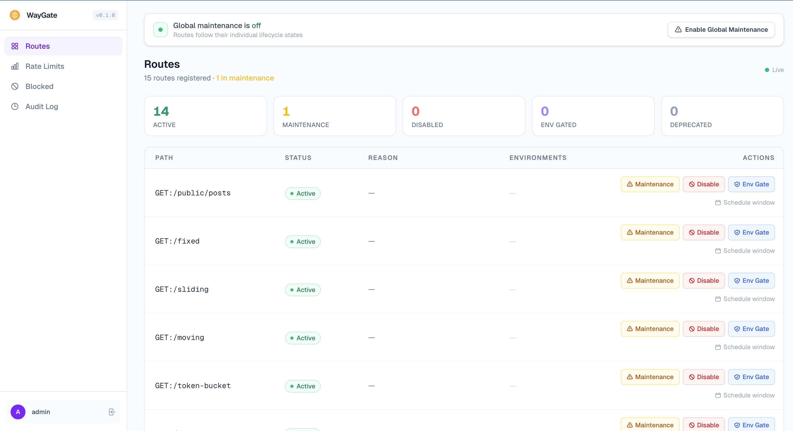

Route Control¶
Waygate gives you five decorators to control how a route behaves at runtime. Apply them once in code, then change state without touching code or restarting the server.
The decorators at a glance¶
| Decorator | HTTP status | When to use |
|---|---|---|
@maintenance(reason) |
503 with Retry-After |
Temporarily taking a route offline |
@disabled(reason) |
503 | Permanently decommissioning a route |
@env_only("staging", "dev") |
404 in unlisted environments | Hiding a route outside specific envs |
@deprecated(sunset, use_instead) |
200 + deprecation headers | Signalling a route will be removed |
@force_active |
Always 200, bypasses all checks | Pinning a route open regardless of global state |
@maintenance¶
Takes a route offline temporarily. Every caller receives a 503 until the route is re-enabled.
from waygate.fastapi import maintenance
@router.get("/payments")
@maintenance(reason="Payment provider maintenance - back at 04:00 UTC")
async def get_payments():
return {"payments": []}
Response:
{
"error": {
"code": "MAINTENANCE_MODE",
"message": "This endpoint is temporarily unavailable",
"reason": "Payment provider maintenance - back at 04:00 UTC",
"path": "GET:/payments",
"retry_after": "2025-06-01T04:00:00Z"
}
}
Scheduled maintenance window¶
Pass start and end to activate and deactivate automatically. The route returns to active when the window closes.
from datetime import UTC, datetime, timedelta
@router.get("/checkout")
@maintenance(
reason="Scheduled upgrade",
start=datetime(2025, 6, 1, 3, 0, tzinfo=UTC),
end=datetime(2025, 6, 1, 4, 0, tzinfo=UTC),
)
async def checkout():
return {"checkout": "ok"}
You can also schedule windows at runtime without changing code:
waygate schedule GET:/checkout \
--reason "Scheduled upgrade" \
--start "2025-06-01T03:00:00Z" \
--end "2025-06-01T04:00:00Z"
@disabled¶
Permanently blocks a route with a 503. Unlike @maintenance, there is no retry_after timestamp because the route is not expected to come back.
from waygate.fastapi import disabled
@router.get("/v1/legacy-endpoint")
@disabled(reason="Removed in v2. Use /v2/endpoint instead.")
async def legacy():
return {}
Response:
{
"error": {
"code": "ROUTE_DISABLED",
"message": "This endpoint has been disabled",
"reason": "Removed in v2. Use /v2/endpoint instead.",
"path": "GET:/v1/legacy-endpoint"
}
}
@env_only¶
Restricts a route to specific environments. Callers in unlisted environments receive a 404.
from waygate.fastapi import env_only
@router.post("/admin/seed-database")
@env_only("development", "staging")
async def seed():
return {"seeded": True}
Waygate reads the current environment from WAYGATE_ENV (defaults to "dev").
WAYGATE_ENV=staging uvicorn app:app # route is accessible
WAYGATE_ENV=production uvicorn app:app # route returns 404
The route is also hidden from /docs when the current environment is not in the allowed list.
@deprecated¶
The route still works and returns 200, but every response includes deprecation headers.
from waygate.fastapi import deprecated
@router.get("/v1/users")
@deprecated(
sunset="2025-12-31",
use_instead="/v2/users",
)
async def list_users_v1():
return {"users": []}
Every response includes:
These headers follow the HTTP Deprecation and Sunset standards. Most HTTP clients and API gateways surface them automatically.
@force_active¶
Pins a route permanently open, bypassing all waygate checks including global maintenance mode. Suitable for health checks, readiness probes, and internal status endpoints.
from waygate.fastapi import force_active
@router.get("/health")
@force_active
async def health():
return {"status": "ok"}
This route always returns 200, even when engine.enable_global_maintenance() is active.
Combining decorators¶
@force_active and @deprecated can be combined with @maintenance or @disabled. Apply @force_active outermost so it takes effect regardless of the other decorator:
@router.get("/health")
@force_active
@deprecated(sunset="2025-12-31", use_instead="/v2/health")
async def health_v1():
return {"status": "ok"}
Rate limiting stacks with any lifecycle decorator. The lifecycle check runs first, so a route in maintenance never consumes quota:
from waygate.fastapi import maintenance, rate_limit
@router.get("/checkout")
@maintenance(reason="Upgrade in progress")
@rate_limit("20/minute")
async def checkout():
return {"ok": True}
Runtime control¶
Route state can be changed at runtime with no code changes and no server restart.
Via the engine¶
await engine.set_maintenance("GET:/payments", reason="Hotfix")
await engine.enable("GET:/payments")
await engine.disable("GET:/payments", reason="Deprecated")
from datetime import UTC, datetime, timedelta
await engine.schedule_maintenance(
"GET:/checkout",
reason="Upgrade",
start=datetime.now(UTC) + timedelta(hours=1),
end=datetime.now(UTC) + timedelta(hours=2),
)
Via the CLI¶
waygate maintenance GET:/payments --reason "Hotfix"
waygate enable GET:/payments
waygate disable GET:/payments --reason "Deprecated"
waygate schedule GET:/checkout \
--reason "Upgrade" \
--start "2025-06-01T03:00:00Z" \
--end "2025-06-01T04:00:00Z"
Via the dashboard¶
The Routes tab lists every registered route with its current status. Click the status badge to toggle it, or open the route detail view to set a scheduled window or maintenance reason.

How the checks run¶
For every request, the middleware checks in this order:
@force_activeroute? Pass through.- Global maintenance active? Return 503.
- Route in
MAINTENANCE? Return 503. - Route
DISABLED? Return 503. - Route
ENV_GATEDand wrong environment? Return 404. - Route
DEPRECATED? Pass through and inject headers. - Rate limit policy registered? Check and either pass or return 429.